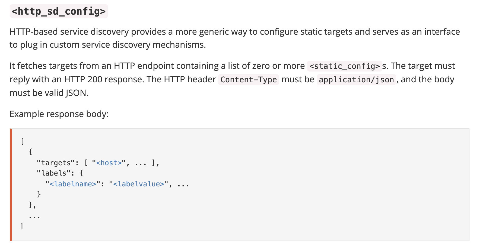
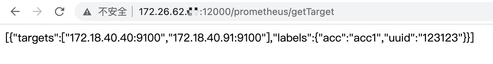
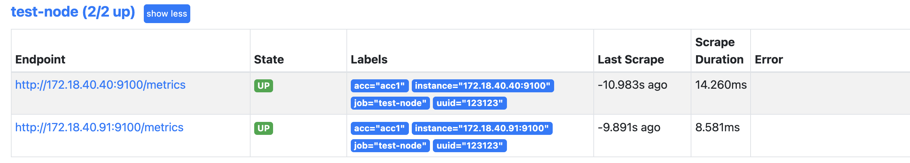
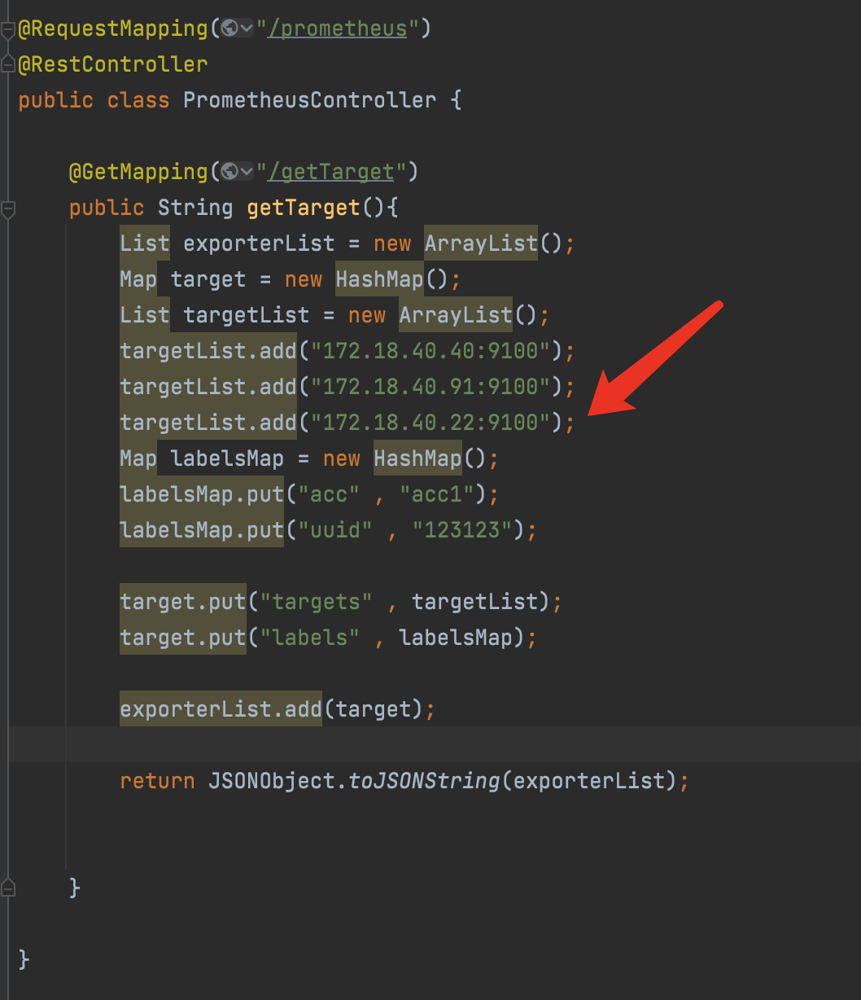
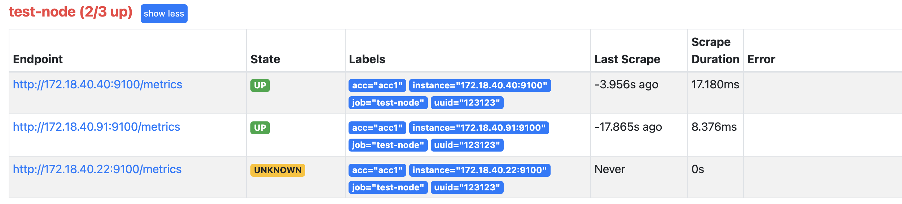
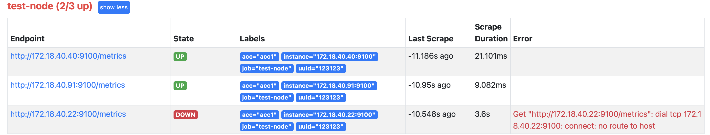
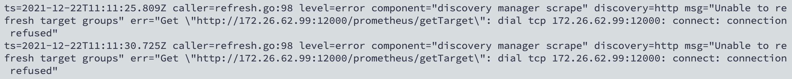

prometheus提供了多种动态服务发现的方式，这里讲一下http_sd_config的配置方法
官方说明 先来看下prometheus官方文档的说明

大致就是说：需要自己提供一个http访问地址，prometheus能够通过访问该地址得到需要发现的服务节点的数据，并且该地址返回的json数据结构要与图中保持一致。
配置说明 再来看下关于该选项有哪些配置项：
1 2 3 4 5 6 7 8 9 10 11 12 13 14 15 16 17 18 19 20 21 22 23 24 25 26 27 28 29 30 31 32 33 34 35 36 37 38 39 url: <string> [ refresh_interval: <duration> | default = 60s ] basic_auth: [ username: <string> ] [ password: <secret> ] [ password_file: <string> ] authorization: [ type: <string> | default: Bearer ] [ credentials: <secret> ] [ credentials_file: <filename> ] oauth2: [ <oauth2> ] [ proxy_url: <string> ] [ follow_redirects: <bool> | default = true ] tls_config: [ <tls_config> ]
如果自己提供的接口不用验证身份，那么只需要配置url和刷新频率即可；
实战 前提：
已经部署好了prometheus和各exporter的节点
其中prometheus最好是最新版（2.30版本及以前的版本好像不支持）
开发动态获取服务的接口 我这里用的java开发的一个后端程序，controller的代码如下：
1 2 3 4 5 6 7 8 9 10 11 12 13 14 15 16 17 18 19 20 21 22 23 24 25 @RequestMapping("/prometheus") @RestController public class PrometheusController @GetMapping("/getTarget") public String getTarget () List exporterList = new ArrayList(); Map target = new HashMap(); List targetList = new ArrayList(); targetList.add("172.18.40.40:9100" ); targetList.add("172.18.40.91:9100" ); Map labelsMap = new HashMap(); labelsMap.put("acc" , "acc1" ); labelsMap.put("uuid" , "123123" ); target.put("targets" , targetList); target.put("labels" , labelsMap); exporterList.add(target); return JSONObject.toJSONString(exporterList); } }
在浏览器中，访问该接口，查看返回的数据如下：

修改prometheus的配置 prometheus的配置如下：
1 2 3 4 5 scrape_configs: - job_name: 'test-node' http_sd_configs: - url: http://172.26.62.xx:12000/prometheus/getTarget refresh_interval: 5s
配置说明：
http://172.26.62.xx:12000/prometheus/getTarget：该地址是后端程序提供的
修改完prometheus的配置后，重启prometheus或调用prometheus的reload的接口(http://ip:port/-/reload )
检查 访问prometheus的界面，查看我后端接口提供的服务是否被发现

可以发现，prometheus已经成功监控到了提供的服务；
测试 修改接口提供的数据，在不重启和不重新加载prometheus的情况下，观察prometheus会不会变化监控的节点
我在后端服务接口中，添加了一个不存在的节点

等待几秒钟后，可以发现prometheus发现了该节点，但还没有去访问该节点去获取监控数据，因此状态为UNKNOWN

在等几秒，prometheus去访问该几点时，发现服务是不存在的，调整状态为DOWN

从prometheus的日志也可以看出，每隔 5s 就掉一次我的后端服务
